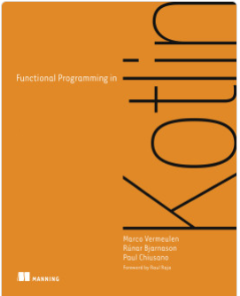

Programación Declarativa Aplicada
montenegro@fdi.ucm.es
Máster en Ingeniería Informática
Facultad de Informática
Universidad Complutense de Madrid
- ¿Qué es la programación declarativa?
- Objetivos del curso
- Metodología
- Evaluación
- Software
¿Qué es la programación declarativa?
¿Qué es la programación declarativa?
Es un paradigma (estilo) de programación en el que el programador/a expresa el resultado esperado de un programa sin indicar cómo calcularlo.
«Qué calcular» en lugar de
«cómo calcularlo»
Ejemplo
Supongamos que tenemos una lista de personas, cada una con una edad y una lista de viviendas en propiedad.
- Una misma persona puede aparecer varias veces en la lista, cada vez con distintas viviendas.
Cada propiedad está situada en un municipio.
Queremos saber cuántas personas mayores de 50 años tienen una vivienda en el municipio de Lucena (Córdoba).
Solución imperativa en Java
public int numPersonasLucena(List<Persona> personas) {
Set<Persona> personasLucena = new HashSet<>();
for (Persona p : personas) {
if (p.getEdad() > 50) {
for (Vivienda v : p.getViviendas()) {
if (v.getMunicipio().equals("Lucena")) {
personasLucena.add(p.getId());
break;
}
}
}
}
return personasLucena.size();
}Solución declarativa en Elixir
Solución declarativa en Java
record Person (int id, int edad, Stream<Vivienda> viviendas, ...) {}
record Vivienda (String municipio, ...) {}
public int numPersonasLucena(List<Persona> personas) {
personas.stream()
.filter(p -> p.edad() > 50 &&
p.viviendas().anyMatch(v -> v.municipio().equals("Lucena")))
.map(p -> p.id)
.distinct()
.count()
}Solución declarativa
- Enfoque de más alto nivel
- Más fácil de entender (si conoces el lenguaje üòÖ)
- (A veces) más ineficiente
Paradigmas de programación declarativa
- Programación funcional (Haskell, Erlang, Elixir,
Scala)
- Los programas se definen mediante funciones «matemáticas».
- Programación lógica (Prolog)
- Los programas se definen mediante predicados lógicos.
- Programación basada en restricciones (Oz, MiniZinc)
- Se especifican las condiciones que ha de cumplir la solución a un determinado problema.
- Lenguajes específicos de dominio (SQL, XQuery, HTML)
Objetivos del curso
Programación declarativa «pura»
- La mejor manera de aprender qué es la PD
- Pack completo, o nada
- Lenguajes de uso reducido
«It has often been predicted that one day functional programming languages will rule the world, but it hasn’t happened yet. Famous functional languages such as Haskell and Lisp still aren’t on the top-10 lists of the most popular programming languages. Those lists are reserved for traditionally imperative languages including C, Java, and C++.»
Ivan Čukić
pero…
«Instead of functional programming languages becoming the most popular, something else is happening: the most popular programming languages have started introducing features inspired by functional programming languages.»
Ivan Čukić
Nuestro curso
- Aplicable en ámbitos industriales
- Más interoperable con código existente
- Aplicable total o parcialmente
Objetivos
- Conocer las técnicas de programación funcional concurrente (con Elixir)
- Aplicar estas técnicas a lenguajes imperativos mainstream (Java, Kotlin, C++, etc.)
- Utilizar arquitecturas funcionales para el desarrollo de sistemas.
Requisitos
Conceptos básicos de:
- Programación
- HTML
PDAP te gustará si…
- Te gustan los lenguajes de programación
- Has cursado PD (y te gust√≥ üíÉ)
- Quieres aprender nuevas maneras de programar
PDAP no te gustará si…
- Tienes alergia a los lenguajes de alto nivel
- Eres adicto/a a las micro-optimizaciones
Metodología
Metodología
Clases de teoría los viernes (1 hora)
Material en el Campus Virtual.
No todas las diapositivas se explicarán en clase de teoría; algunas de ellas son para estudio individual fuera de clase.
Clases de laboratorio los martes (2 horas)
Realización de ejercicios.
Algunos de los ejercicios son entregables al final de clase y puntúan para la evaluación continua; otros no.
En algunas ocasiones, se impartirá algo de teoría al principio de las clases de laboratorio.
Diapositivas con fondo azul
Las diapositivas que no se explican en las clases de teoría aparecen con un fondo azul (como esta), para que las podáis distinguir mejor cuando estudiéis la teoría.
Evaluación
Evaluación
Modalidad A
- Ejercicios (40 %)
- Mini-proyecto (40 %)
- Presentación (20 %)
Modalidad B
- Examen (80 %)
- Mini-proyecto (20 %)
Ejercicios (40 %)
En algunas de las sesiones de laboratorio se propondrán ejercicios que serán entregables.
Para obtener la calificación máxima se requiere entregarlos en esa misma sesión.
- Se pueden entregar después de la sesión de laboratorio, pero la calificación máxima obtenible será menor.
Se avisará la semana anterior cuándo hay sesiones de laboratorio con ejercicios entregables.
Son individuales
Mini-proyecto (40 %)
Desarrollo de un proyecto de tamaño pequeño-mediano integrando las herramientas vistas durante el curso.
Fecha de entrega: mediados de enero.
A mediados de noviembre se expondrán las propuestas de proyecto.
- Se admiten propuestas propias de los estudiantes.
Son individuales
Presentación (20 %)
Lista de temas ofertadas por el profesor.
- Se admiten propuestas propias de los estudiantes.
Los temas están relacionados, principalmente, con el uso del paradigma funcional en lenguajes imperativos (objetivo 2 del curso).
Fecha de presentaciones: última semana del curso (9-13 de diciembre)
Son individuales
Regla de oro para no suspender
En las prácticas y mini-proyecto:
No entregues una sola de línea de código cuyo funcionamiento no sepas explicar.
En la presentación:
No digas una sola frase cuyo significado no sepas explicar.
Software
Lenguajes y entornos de desarrollo
Plugin para desarrollo Elixir en VS Code
https://marketplace.visualstudio.com/items?itemName=JakeBecker.elixir-ls
Elixir
Es un lenguaje de programación funcional concurrente.
- Al contrario que Haskell, no es un lenguaje funcional puro.
Se basa en la máquina virtual de Erlang, que permite manejar miles de procesos de manera eficiente.
Diseñado para aplicaciones distribuidas y escalables, y sistemas de tiempo real.
Potente sistema de macros que facilita el uso de frameworks y bibliotecas.
Popularidad de Elixir
Según Stack Overflow Development Survey 2024:
Elixir es el segundo lenguaje de programación más admirado (por detrás de Rust).
El 76,8 % de los participantes que declararon haberlo utilizado durante este año planean seguir hacerlo el año que viene.
https://survey.stackoverflow.co/2024/technology#admired-and-desired
Elixir es el segundo lenguaje mejor pagado (por detras de Erlang).
https://survey.stackoverflow.co/2024/technology#4-top-paying-technologies
Utilizado en:
Bibliotecas de Elixir más utilizadas

Phoenix: Framework para desarrollo de aplicaciones web:
https://www.phoenixframework.org/
Según Stack Overflow Developer Survey 2024, framework web más admirado.

Ecto: Framework para bases de datos relacionales
Numerical Elixir (Nx): Conjunto de bibliotecas para cálculo numérico, aprendizaje automático, IA, etc.
Bibliografía
Bibliografía
S. Juric
Elixir in Action (3rd edition)
Manning publications, 2024D. Thomas
Programming Elixir 1.6
The Pragmatic Programmers, 2018

V. Venkat Subramaniam
Functional Programming in Java (2nd edition)
The Pragmatic Programmers, 2023M. Vermeulen, R. Bjarnason, P. Chiusano
Functional Programming in Kotlin
Manning publications, 2021I. Čukić
Functional Programming in C++
Manning publications, 2018

